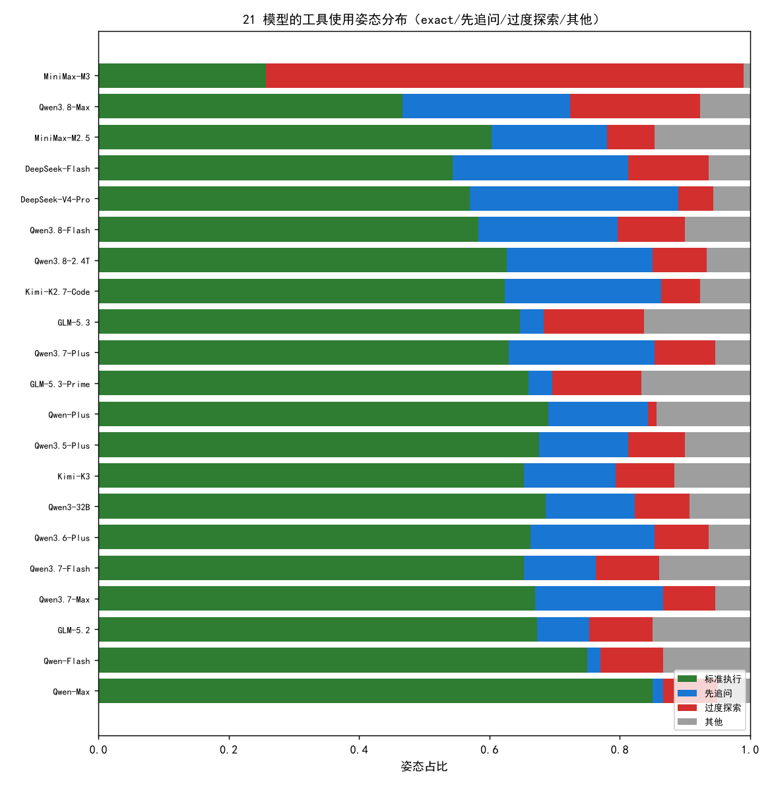
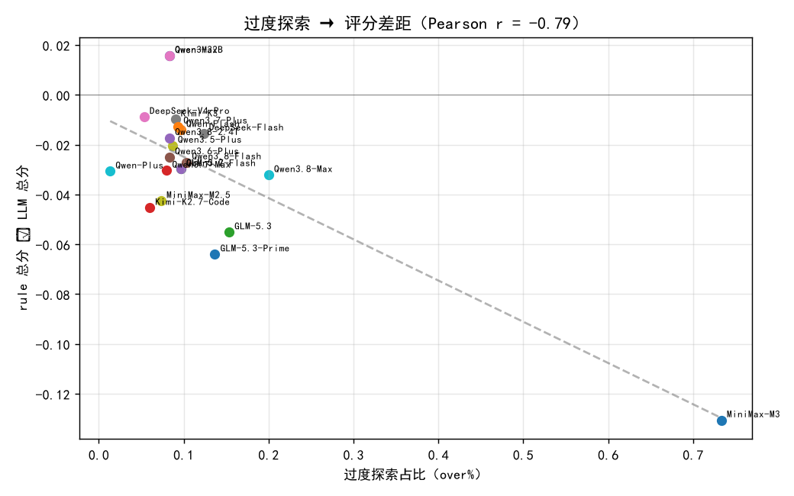
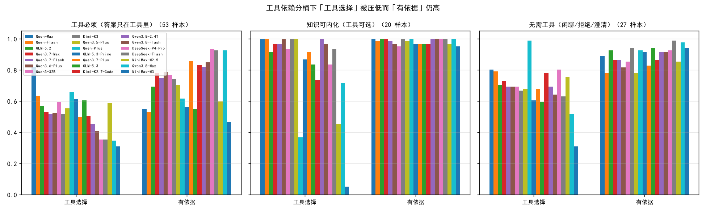
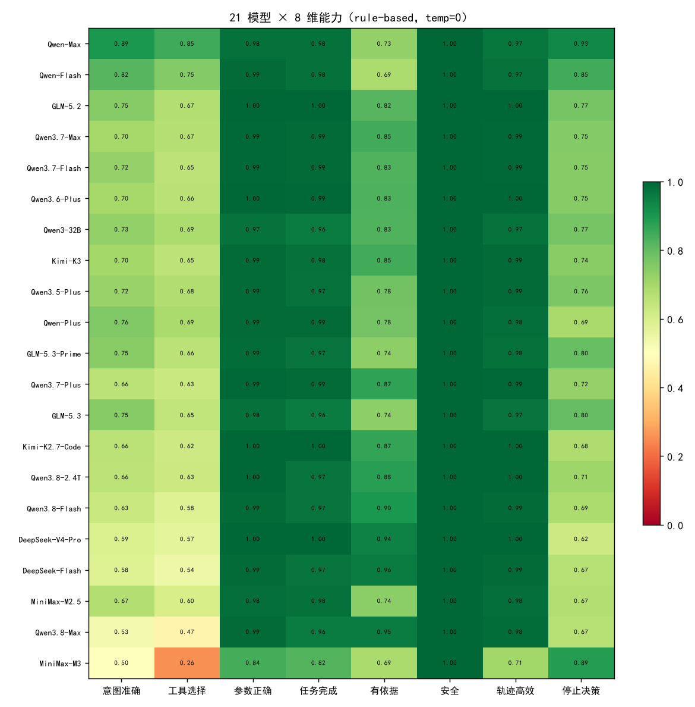

Agent Evaluation · Multi-Model
5 家族 21 模型 · 100 样本 × 3 trial（temp=0）· 双 Grader（rule 8 维 + LLM-as-Judge）
核心结论：不同模型有截然不同的「工具使用姿态」，而 ground truth 只编码了一种「标准动作序列」。 过程型 Grader 对「过度探索」系统性打低分——over 占比与 (rule−LLM) 分差强负相关（r=-0.79）， 而「先追问」几乎不产生分差。差距放大是姿态驱动的、指向过度探索的，不是「能力」的真实差距。
MiniMax-M3 在 300 trial 里有 71% 被归为过度探索（其余模型 ≤22%）； 而 Flash / Qwen3.8-Max 是「先追问」代表（under ~27%）。姿态不是样本噪声，是稳定的模型级行为。
rule 与 LLM 对 21 个模型的排序相关只有 0.63，分歧集中在过度探索模型——说明两者对「什么算好」有方向性差异，而非随机噪声。
rule 把模型拉开 0.20（0.71–0.92），LLM 却只挤出 0.08（0.84–0.92）。 消融：把 MiniMax-M3 的被放大差距从 0.145 收窄到 0.075（D 变体）。 「先追问」不产生分差（flash gap -0.015）。
温度 0→0.3 时 Pass@3 纹丝不动（0.533）、Pass^3 只挪 ≤0.01；姿态带来的得分差远大于采样方差——证明姿态 bias 比采样方差更主导得分。
| 模型 | 家族 | rule 总分 | LLM 总分 | gap (rule−LLM) | over% | under% |
|---|---|---|---|---|---|---|
| Qwen-Max | Qwen | 0.916 | 0.901 | +0.016 | 8% | 2% |
| Qwen-Flash | Qwen | 0.881 | 0.895 | -0.014 | 10% | 2% |
| GLM-5.2 | GLM | 0.876 | 0.905 | -0.030 | 10% | 8% |
| Qwen3.7-Max | Qwen | 0.868 | 0.898 | -0.030 | 8% | 20% |
| Qwen3.7-Flash | Qwen | 0.866 | 0.896 | -0.030 | 10% | 11% |
| Qwen3.6-Plus | Qwen | 0.865 | 0.890 | -0.025 | 8% | 19% |
| Qwen3-32B | Qwen | 0.865 | 0.849 | +0.016 | 8% | 14% |
| Kimi-K3 | Kimi | 0.863 | 0.873 | -0.010 | 9% | 14% |
| Qwen3.5-Plus | Qwen | 0.862 | 0.882 | -0.020 | 9% | 14% |
| Qwen-Plus | Qwen | 0.860 | 0.890 | -0.031 | 1% | 15% |
| GLM-5.3-Prime | GLM | 0.860 | 0.923 | -0.064 | 14% | 4% |
| Qwen3.7-Plus | Qwen | 0.857 | 0.870 | -0.013 | 9% | 22% |
| GLM-5.3 | GLM | 0.854 | 0.909 | -0.055 | 15% | 4% |
| Kimi-K2.7-Code | Kimi | 0.852 | 0.898 | -0.045 | 6% | 24% |
| Qwen3.8-2.4T | Qwen | 0.851 | 0.868 | -0.017 | 8% | 22% |
| Qwen3.8-Flash | Qwen | 0.843 | 0.870 | -0.027 | 10% | 21% |
| DeepSeek-V4-Pro | DeepSeek | 0.841 | 0.850 | -0.009 | 5% | 32% |
| DeepSeek-Flash | DeepSeek | 0.838 | 0.853 | -0.015 | 12% | 27% |
| MiniMax-M2.5 | MiniMax | 0.829 | 0.871 | -0.043 | 7% | 18% |
| Qwen3.8-Max | Qwen | 0.815 | 0.848 | -0.032 | 20% | 26% |
| MiniMax-M3 | MiniMax | 0.713 | 0.844 | -0.131 | 73% | 0% |
gap 为负 = rule 判得比 LLM 更狠；红色 = 被 process 惩罚 ≥0.05 的模型。


| grader 变体 | MiniMax-M3 | 其余均值 | M3 差距 | 跨模型 std |
|---|---|---|---|---|
| baseline 原规则（精确序列匹配） | 0.713 | 0.858 | 0.145 | 0.0366 |
| A 结果型（丢 3 个过程维） | 0.857 | 0.936 | 0.079 | 0.0180 |
| B 分桶（optional/none 关过程惩罚） | 0.760 | 0.873 | 0.113 | 0.0293 |
| C 姿态感知（must 改「必要⊆已调用」） | 0.792 | 0.874 | 0.082 | 0.0245 |
| D + 放宽效率（结果好则不再罚多调） | 0.799 | 0.874 | 0.075 | 0.0235 |
从 baseline 到 D：MiniMax-M3 的差距 0.145 → 0.075， 跨模型 std 0.0366 → 0.0235—— 把「过度探索被过程维惩罚」这一项修正掉，被放大的差距与跨模型 spread 都显著收窄。

